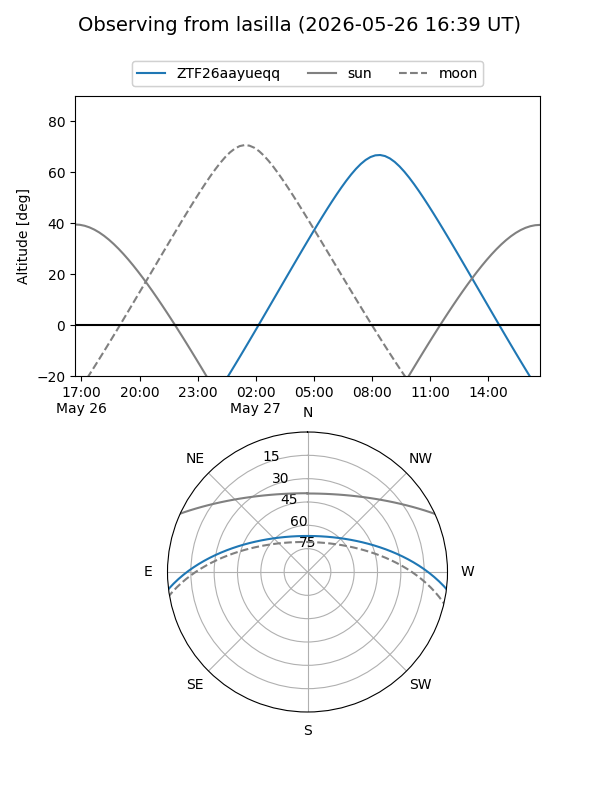
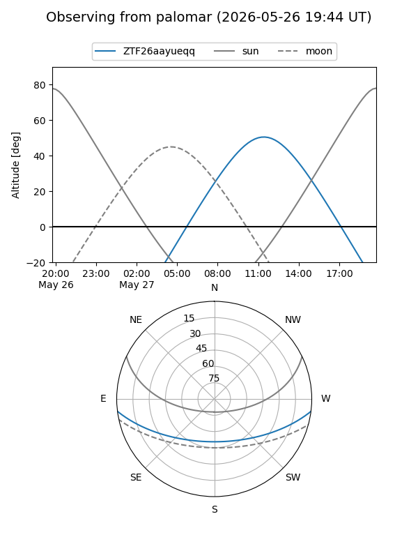

ZTF26aayueqq
Target ZTF26aayueqq at 2026-05-26 11:39
Aliases and brokers:
lsst-FINK: link
lsst-Lasair: link
lsst-ALeRCE: link
ztf-FINK: link
ztf-Lasair: link
ztf-ALeRCE: link
alt names
ZTF26aayueqq (ztf,fink_ztf)
Coordinates:
equatorial (ra, dec) = 299.0824,-6.16057
equatorial (HMS+DMS) = 19:56:19.77,-06:09:38.04
galactic (l, b) = (34.8006,-17.22579)
Flags:
Photometry:
last ztfg=20.10
1 ztfg detections
Lightcurve
Visibility


Additional plots